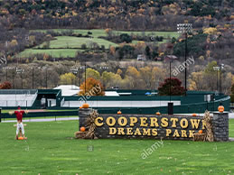
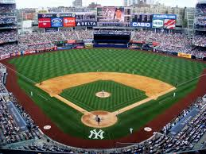

My Baseball Carrer
I started playing baseball when I was5 years old. I have been playing from then till now which has been a total of 11 years. I started off playing tee ball and worked my way up to being able to play around the country. The best experiance I had was when I went to a place called Cooperstown, NY. I got to experiance a fun time with my teamates and my family as well as hit my first home run.
New York Yankees
The New York Yankees have been my favorite baseball team since I was born. Both my parents were raised in New york so in a way I was born into loving the team. Over the years the Yankees have won a lot of championships but have not won one recently. This year they yankees are looking promising as they pick up a couple of power house players with the main one being Corey Kluber. Kluber had a great year in 2018 when he was with the Indians but didn't really start much in the last 2 years. Kluber decided to make a change and signed an 11 million dollar 1 year contract with the Yankees.